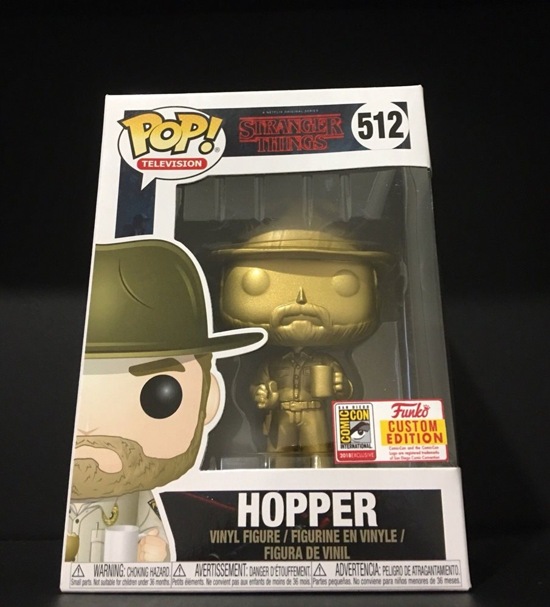

Stranger Things Hopper Gold

Back
info
This pop is actually the most recent one on the list, it is from the funko events that they have at their home city, and is probably the most limited with only forty made.